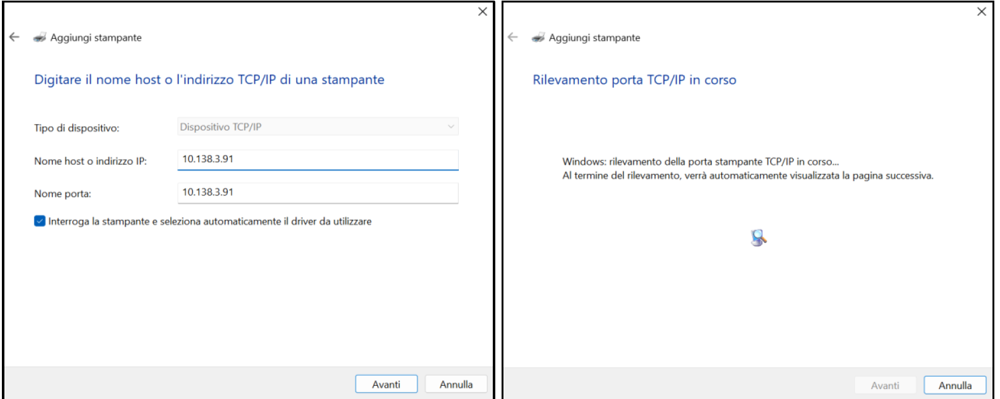

Apri il Pannello di Controllo
Dal PC Windows apri il Pannello di Controllo.

Icone Piccole
Nel Pannello di Controllo imposta la visualizzazione su Icone piccole e clicca su Dispositivi e Stampanti.

Stampanti e scanner
Seleziona Stampanti e scanner.

Aggiungi manualmente
Clicca su Aggiungi dispositivo, poi su Aggiungi una stampante o uno scanner e infine seleziona La stampante desiderata non è nell’elenco.


Crea nuova porta TCP/IP
Seleziona:
Aggiungi una stampante locale o di rete con impostazioni manuali
e poi:
Crea una nuova porta → Standard TCP/IP.

Inserisci IP stampante
Inserisci l’indirizzo IP della stampante (recuperabile dal sistema o dal tuo Server).

RILEVAMENTO
Attendere il rilevamento della stampante.

Seleziona Driver
Clicca su Disco driver → Sfoglia e seleziona il driver Brother corretto.
Imposta come nome stampante: PRTRETE.


Impostazioni finali
Non condividere la stampante e impostala come stampante predefinita.
Il problema è stato risolto?

Ticket Risolto
Aprire un ticket e chiuderlo:
Categoria: RETAIL > B&F - IN STORE TECH > CIAO HW > HW > A4/A5 PRINTER - BROTHER PRINTER
LOCAL IT
Aprire un ticket e assegnarlo a LOCAL IT:
Categoria: RETAIL > B&F - IN STORE TECH > CIAO HW > HW > A4/A5 PRINTER - BROTHER PRINTER